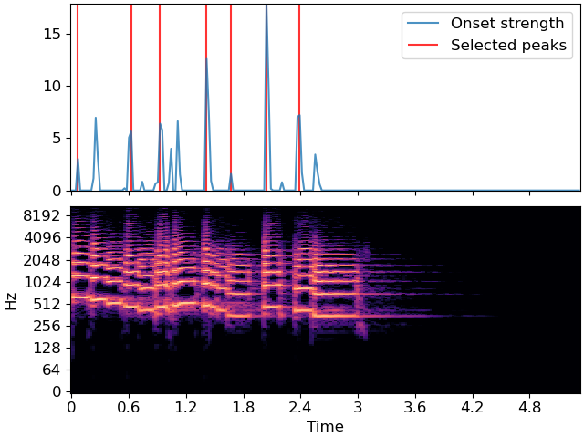

librosa.util.peak_pick¶
- librosa.util.peak_pick(x, *, pre_max, post_max, pre_avg, post_avg, delta, wait)[source]¶
Uses a flexible heuristic to pick peaks in a signal.
A sample n is selected as an peak if the corresponding
x[n]fulfills the following three conditions:x[n] == max(x[n - pre_max:n + post_max])x[n] >= mean(x[n - pre_avg:n + post_avg]) + deltan - previous_n > wait
where
previous_nis the last sample picked as a peak (greedily).This implementation is based on 1 and 2.
- 1
Boeck, Sebastian, Florian Krebs, and Markus Schedl. “Evaluating the Online Capabilities of Onset Detection Methods.” ISMIR. 2012.
- 2
https://github.com/CPJKU/onset_detection/blob/master/onset_program.py
- Parameters
- xnp.ndarray [shape=(n,)]
input signal to peak picks from
- pre_maxint >= 0 [scalar]
number of samples before
nover which max is computed- post_maxint >= 1 [scalar]
number of samples after
nover which max is computed- pre_avgint >= 0 [scalar]
number of samples before
nover which mean is computed- post_avgint >= 1 [scalar]
number of samples after
nover which mean is computed- deltafloat >= 0 [scalar]
threshold offset for mean
- waitint >= 0 [scalar]
number of samples to wait after picking a peak
- Returns
- peaksnp.ndarray [shape=(n_peaks,), dtype=int]
indices of peaks in
x
- Raises
- ParameterError
If any input lies outside its defined range
Examples
>>> y, sr = librosa.load(librosa.ex('trumpet')) >>> onset_env = librosa.onset.onset_strength(y=y, sr=sr, ... hop_length=512, ... aggregate=np.median) >>> peaks = librosa.util.peak_pick(onset_env, pre_max=3, post_max=3, pre_avg=3, post_avg=5, delta=0.5, wait=10) >>> peaks array([ 3, 27, 40, 61, 72, 88, 103])
>>> import matplotlib.pyplot as plt >>> times = librosa.times_like(onset_env, sr=sr, hop_length=512) >>> fig, ax = plt.subplots(nrows=2, sharex=True) >>> D = np.abs(librosa.stft(y)) >>> librosa.display.specshow(librosa.amplitude_to_db(D, ref=np.max), ... y_axis='log', x_axis='time', ax=ax[1]) >>> ax[0].plot(times, onset_env, alpha=0.8, label='Onset strength') >>> ax[0].vlines(times[peaks], 0, ... onset_env.max(), color='r', alpha=0.8, ... label='Selected peaks') >>> ax[0].legend(frameon=True, framealpha=0.8) >>> ax[0].label_outer()
